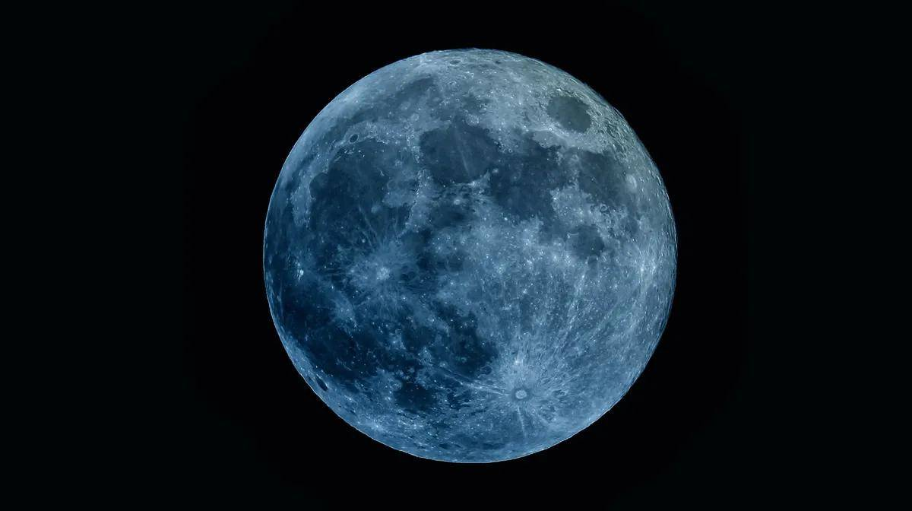
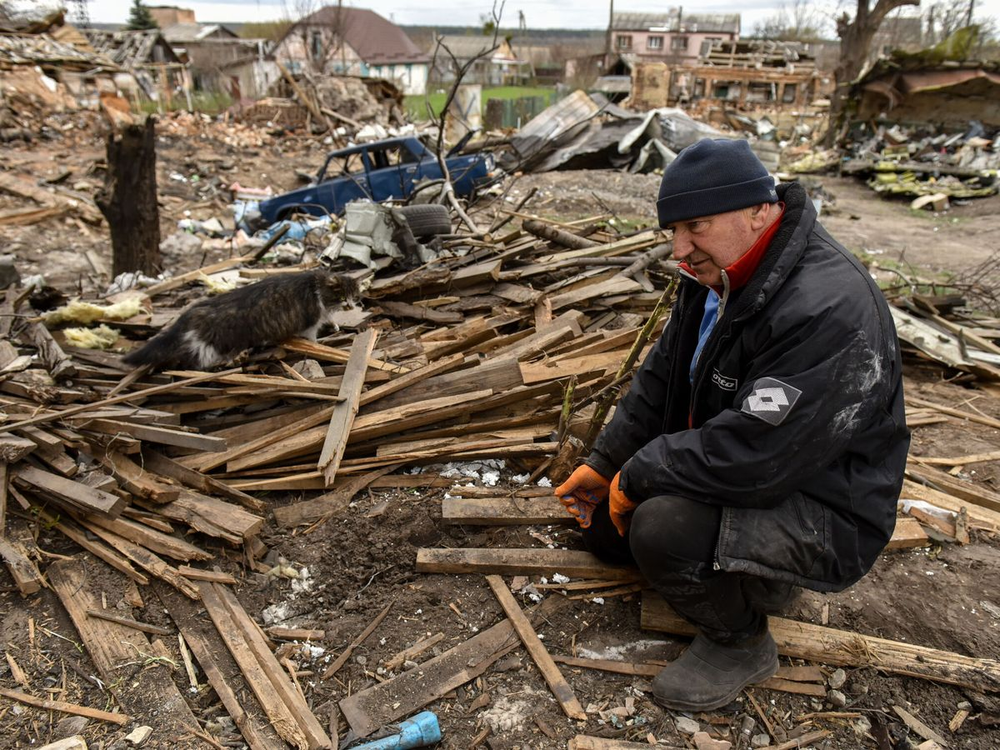
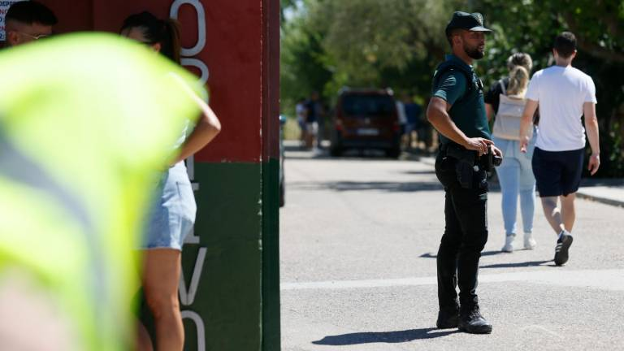

Titulares del día
La ONU pide una pausa humanitaria en Gaza para poder vacunar contra la polio por un posible brote
Grupos de ayuda y organizaciones internacionales piden una pausa humanitaria en los combates de Gaza para permitir una campaña masiva de vacunación contra la polio. En Gaza se ha confirmado un caso de polio y se sospecha de otros, y en julio se detectó el virus en aguas residuales tomadas en seis muestras.
¿Qué es y cuáles son los mejores lugares para ver la superluna azul en Europa?
Vea el espectáculo astronómico en la retransmisión en directo de 'Euronews' el lunes por la noche o descubra en qué lugar de Europa tendrá más posibilidades de verlo con mayor nitidez.
Parlamentarios alemanes advierten de que cualquier disminución de la ayuda financiera a Ucrania enviaría una "señal fatal
Una carta del ministro de Finanzas ha suscitado dudas sobre cuánto tiempo y con qué firmeza seguirá Alemania apoyando a Ucrania ante la invasión rusa.
Noticia principal
Detenido el presunto asesino del niño de 11 años en Mocejón, Toledo
La Guardia Civil está registrando su domicilio junto al juez de guardia para dar con el arma del crimen. El pequeño Mateo fue acuchillado en un campo de fútbol de dicha localidad este domingo.
Ver más